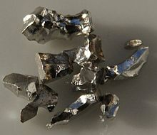

Iridium
|  | |||||||||||||||||||||||||||||||||||||||||||||||||||||||||||||||||||||||||||||||||||||||||||||||||||||||||||||||||||||||||||||||||||||||||||||||||||||||||||||||||||||||||||||||||||||||||||||||||||||||||||||||||||||||||||||||||||||
| General properties | |||||||||||||||||||||||||||||||||||||||||||||||||||||||||||||||||||||||||||||||||||||||||||||||||||||||||||||||||||||||||||||||||||||||||||||||||||||||||||||||||||||||||||||||||||||||||||||||||||||||||||||||||||||||||||||||||||||
|---|---|---|---|---|---|---|---|---|---|---|---|---|---|---|---|---|---|---|---|---|---|---|---|---|---|---|---|---|---|---|---|---|---|---|---|---|---|---|---|---|---|---|---|---|---|---|---|---|---|---|---|---|---|---|---|---|---|---|---|---|---|---|---|---|---|---|---|---|---|---|---|---|---|---|---|---|---|---|---|---|---|---|---|---|---|---|---|---|---|---|---|---|---|---|---|---|---|---|---|---|---|---|---|---|---|---|---|---|---|---|---|---|---|---|---|---|---|---|---|---|---|---|---|---|---|---|---|---|---|---|---|---|---|---|---|---|---|---|---|---|---|---|---|---|---|---|---|---|---|---|---|---|---|---|---|---|---|---|---|---|---|---|---|---|---|---|---|---|---|---|---|---|---|---|---|---|---|---|---|---|---|---|---|---|---|---|---|---|---|---|---|---|---|---|---|---|---|---|---|---|---|---|---|---|---|---|---|---|---|---|---|---|---|---|---|---|---|---|---|---|---|---|---|---|---|---|---|---|---|
| Name, symbol | iridium, Ir | ||||||||||||||||||||||||||||||||||||||||||||||||||||||||||||||||||||||||||||||||||||||||||||||||||||||||||||||||||||||||||||||||||||||||||||||||||||||||||||||||||||||||||||||||||||||||||||||||||||||||||||||||||||||||||||||||||||
| Pronunciation | /ɨˈrɪdiəm/ i-RID-ee-əm |
||||||||||||||||||||||||||||||||||||||||||||||||||||||||||||||||||||||||||||||||||||||||||||||||||||||||||||||||||||||||||||||||||||||||||||||||||||||||||||||||||||||||||||||||||||||||||||||||||||||||||||||||||||||||||||||||||||
| Appearance | silvery white | ||||||||||||||||||||||||||||||||||||||||||||||||||||||||||||||||||||||||||||||||||||||||||||||||||||||||||||||||||||||||||||||||||||||||||||||||||||||||||||||||||||||||||||||||||||||||||||||||||||||||||||||||||||||||||||||||||||
| Iridium in the periodic table | |||||||||||||||||||||||||||||||||||||||||||||||||||||||||||||||||||||||||||||||||||||||||||||||||||||||||||||||||||||||||||||||||||||||||||||||||||||||||||||||||||||||||||||||||||||||||||||||||||||||||||||||||||||||||||||||||||||
|
|||||||||||||||||||||||||||||||||||||||||||||||||||||||||||||||||||||||||||||||||||||||||||||||||||||||||||||||||||||||||||||||||||||||||||||||||||||||||||||||||||||||||||||||||||||||||||||||||||||||||||||||||||||||||||||||||||||
| Atomic number | 77 | ||||||||||||||||||||||||||||||||||||||||||||||||||||||||||||||||||||||||||||||||||||||||||||||||||||||||||||||||||||||||||||||||||||||||||||||||||||||||||||||||||||||||||||||||||||||||||||||||||||||||||||||||||||||||||||||||||||
| Standard atomic weight (±) | 192.217(3)[1] | ||||||||||||||||||||||||||||||||||||||||||||||||||||||||||||||||||||||||||||||||||||||||||||||||||||||||||||||||||||||||||||||||||||||||||||||||||||||||||||||||||||||||||||||||||||||||||||||||||||||||||||||||||||||||||||||||||||
| Element category | transition metal | ||||||||||||||||||||||||||||||||||||||||||||||||||||||||||||||||||||||||||||||||||||||||||||||||||||||||||||||||||||||||||||||||||||||||||||||||||||||||||||||||||||||||||||||||||||||||||||||||||||||||||||||||||||||||||||||||||||
| Group, block | group 9, d-block | ||||||||||||||||||||||||||||||||||||||||||||||||||||||||||||||||||||||||||||||||||||||||||||||||||||||||||||||||||||||||||||||||||||||||||||||||||||||||||||||||||||||||||||||||||||||||||||||||||||||||||||||||||||||||||||||||||||
| Period | period 6 | ||||||||||||||||||||||||||||||||||||||||||||||||||||||||||||||||||||||||||||||||||||||||||||||||||||||||||||||||||||||||||||||||||||||||||||||||||||||||||||||||||||||||||||||||||||||||||||||||||||||||||||||||||||||||||||||||||||
| Electron configuration | [Xe] 6s2 4f14 5d7 | ||||||||||||||||||||||||||||||||||||||||||||||||||||||||||||||||||||||||||||||||||||||||||||||||||||||||||||||||||||||||||||||||||||||||||||||||||||||||||||||||||||||||||||||||||||||||||||||||||||||||||||||||||||||||||||||||||||
| per shell | 2, 8, 18, 32, 15, 2 | ||||||||||||||||||||||||||||||||||||||||||||||||||||||||||||||||||||||||||||||||||||||||||||||||||||||||||||||||||||||||||||||||||||||||||||||||||||||||||||||||||||||||||||||||||||||||||||||||||||||||||||||||||||||||||||||||||||
| Physical properties | |||||||||||||||||||||||||||||||||||||||||||||||||||||||||||||||||||||||||||||||||||||||||||||||||||||||||||||||||||||||||||||||||||||||||||||||||||||||||||||||||||||||||||||||||||||||||||||||||||||||||||||||||||||||||||||||||||||
| Phase | solid | ||||||||||||||||||||||||||||||||||||||||||||||||||||||||||||||||||||||||||||||||||||||||||||||||||||||||||||||||||||||||||||||||||||||||||||||||||||||||||||||||||||||||||||||||||||||||||||||||||||||||||||||||||||||||||||||||||||
| Melting point | 2719 K (2446 °C, 4435 °F) | ||||||||||||||||||||||||||||||||||||||||||||||||||||||||||||||||||||||||||||||||||||||||||||||||||||||||||||||||||||||||||||||||||||||||||||||||||||||||||||||||||||||||||||||||||||||||||||||||||||||||||||||||||||||||||||||||||||
| Boiling point | 4403 K (4130 °C, 7466 °F) | ||||||||||||||||||||||||||||||||||||||||||||||||||||||||||||||||||||||||||||||||||||||||||||||||||||||||||||||||||||||||||||||||||||||||||||||||||||||||||||||||||||||||||||||||||||||||||||||||||||||||||||||||||||||||||||||||||||
| Density near r.t. | 22.56 g·cm−3 | ||||||||||||||||||||||||||||||||||||||||||||||||||||||||||||||||||||||||||||||||||||||||||||||||||||||||||||||||||||||||||||||||||||||||||||||||||||||||||||||||||||||||||||||||||||||||||||||||||||||||||||||||||||||||||||||||||||
| when liquid, at m.p. | 19 g·cm−3 | ||||||||||||||||||||||||||||||||||||||||||||||||||||||||||||||||||||||||||||||||||||||||||||||||||||||||||||||||||||||||||||||||||||||||||||||||||||||||||||||||||||||||||||||||||||||||||||||||||||||||||||||||||||||||||||||||||||
| Heat of fusion | 41.12 kJ·mol−1 | ||||||||||||||||||||||||||||||||||||||||||||||||||||||||||||||||||||||||||||||||||||||||||||||||||||||||||||||||||||||||||||||||||||||||||||||||||||||||||||||||||||||||||||||||||||||||||||||||||||||||||||||||||||||||||||||||||||
| Heat of vaporization | 564 kJ·mol−1 | ||||||||||||||||||||||||||||||||||||||||||||||||||||||||||||||||||||||||||||||||||||||||||||||||||||||||||||||||||||||||||||||||||||||||||||||||||||||||||||||||||||||||||||||||||||||||||||||||||||||||||||||||||||||||||||||||||||
| Molar heat capacity | 25.10 J·mol−1·K−1 | ||||||||||||||||||||||||||||||||||||||||||||||||||||||||||||||||||||||||||||||||||||||||||||||||||||||||||||||||||||||||||||||||||||||||||||||||||||||||||||||||||||||||||||||||||||||||||||||||||||||||||||||||||||||||||||||||||||
vapor pressure
|
|||||||||||||||||||||||||||||||||||||||||||||||||||||||||||||||||||||||||||||||||||||||||||||||||||||||||||||||||||||||||||||||||||||||||||||||||||||||||||||||||||||||||||||||||||||||||||||||||||||||||||||||||||||||||||||||||||||
| Atomic properties | |||||||||||||||||||||||||||||||||||||||||||||||||||||||||||||||||||||||||||||||||||||||||||||||||||||||||||||||||||||||||||||||||||||||||||||||||||||||||||||||||||||||||||||||||||||||||||||||||||||||||||||||||||||||||||||||||||||
| Oxidation states | −3, −1, 0, 1, 2, 3, 4, 5, 6, 7, 8, 9[2] | ||||||||||||||||||||||||||||||||||||||||||||||||||||||||||||||||||||||||||||||||||||||||||||||||||||||||||||||||||||||||||||||||||||||||||||||||||||||||||||||||||||||||||||||||||||||||||||||||||||||||||||||||||||||||||||||||||||
| Electronegativity | Pauling scale: 2.20 | ||||||||||||||||||||||||||||||||||||||||||||||||||||||||||||||||||||||||||||||||||||||||||||||||||||||||||||||||||||||||||||||||||||||||||||||||||||||||||||||||||||||||||||||||||||||||||||||||||||||||||||||||||||||||||||||||||||
| Ionization energies | 1st: 880 kJ·mol−1 2nd: 1600 kJ·mol−1 |
||||||||||||||||||||||||||||||||||||||||||||||||||||||||||||||||||||||||||||||||||||||||||||||||||||||||||||||||||||||||||||||||||||||||||||||||||||||||||||||||||||||||||||||||||||||||||||||||||||||||||||||||||||||||||||||||||||
| Atomic radius | empirical: 136 pm | ||||||||||||||||||||||||||||||||||||||||||||||||||||||||||||||||||||||||||||||||||||||||||||||||||||||||||||||||||||||||||||||||||||||||||||||||||||||||||||||||||||||||||||||||||||||||||||||||||||||||||||||||||||||||||||||||||||
| Covalent radius | 141±6 pm | ||||||||||||||||||||||||||||||||||||||||||||||||||||||||||||||||||||||||||||||||||||||||||||||||||||||||||||||||||||||||||||||||||||||||||||||||||||||||||||||||||||||||||||||||||||||||||||||||||||||||||||||||||||||||||||||||||||
| Miscellanea | |||||||||||||||||||||||||||||||||||||||||||||||||||||||||||||||||||||||||||||||||||||||||||||||||||||||||||||||||||||||||||||||||||||||||||||||||||||||||||||||||||||||||||||||||||||||||||||||||||||||||||||||||||||||||||||||||||||
| Crystal structure | face-centered cubic (fcc)
 |
||||||||||||||||||||||||||||||||||||||||||||||||||||||||||||||||||||||||||||||||||||||||||||||||||||||||||||||||||||||||||||||||||||||||||||||||||||||||||||||||||||||||||||||||||||||||||||||||||||||||||||||||||||||||||||||||||||
| Speed of sound thin rod | 4825 m·s−1 (at 20 °C) | ||||||||||||||||||||||||||||||||||||||||||||||||||||||||||||||||||||||||||||||||||||||||||||||||||||||||||||||||||||||||||||||||||||||||||||||||||||||||||||||||||||||||||||||||||||||||||||||||||||||||||||||||||||||||||||||||||||
| Thermal expansion | 6.4 µm·m−1·K−1 | ||||||||||||||||||||||||||||||||||||||||||||||||||||||||||||||||||||||||||||||||||||||||||||||||||||||||||||||||||||||||||||||||||||||||||||||||||||||||||||||||||||||||||||||||||||||||||||||||||||||||||||||||||||||||||||||||||||
| Thermal conductivity | 147 W·m−1·K−1 | ||||||||||||||||||||||||||||||||||||||||||||||||||||||||||||||||||||||||||||||||||||||||||||||||||||||||||||||||||||||||||||||||||||||||||||||||||||||||||||||||||||||||||||||||||||||||||||||||||||||||||||||||||||||||||||||||||||
| Electrical resistivity | 47.1 nΩ·m (at 20 °C) | ||||||||||||||||||||||||||||||||||||||||||||||||||||||||||||||||||||||||||||||||||||||||||||||||||||||||||||||||||||||||||||||||||||||||||||||||||||||||||||||||||||||||||||||||||||||||||||||||||||||||||||||||||||||||||||||||||||
| Magnetic ordering | paramagnetic[3] | ||||||||||||||||||||||||||||||||||||||||||||||||||||||||||||||||||||||||||||||||||||||||||||||||||||||||||||||||||||||||||||||||||||||||||||||||||||||||||||||||||||||||||||||||||||||||||||||||||||||||||||||||||||||||||||||||||||
| Young's modulus | 528 GPa | ||||||||||||||||||||||||||||||||||||||||||||||||||||||||||||||||||||||||||||||||||||||||||||||||||||||||||||||||||||||||||||||||||||||||||||||||||||||||||||||||||||||||||||||||||||||||||||||||||||||||||||||||||||||||||||||||||||
| Shear modulus | 210 GPa | ||||||||||||||||||||||||||||||||||||||||||||||||||||||||||||||||||||||||||||||||||||||||||||||||||||||||||||||||||||||||||||||||||||||||||||||||||||||||||||||||||||||||||||||||||||||||||||||||||||||||||||||||||||||||||||||||||||
| Bulk modulus | 320 GPa | ||||||||||||||||||||||||||||||||||||||||||||||||||||||||||||||||||||||||||||||||||||||||||||||||||||||||||||||||||||||||||||||||||||||||||||||||||||||||||||||||||||||||||||||||||||||||||||||||||||||||||||||||||||||||||||||||||||
| Poisson ratio | 0.26 | ||||||||||||||||||||||||||||||||||||||||||||||||||||||||||||||||||||||||||||||||||||||||||||||||||||||||||||||||||||||||||||||||||||||||||||||||||||||||||||||||||||||||||||||||||||||||||||||||||||||||||||||||||||||||||||||||||||
| Mohs hardness | 6.5 | ||||||||||||||||||||||||||||||||||||||||||||||||||||||||||||||||||||||||||||||||||||||||||||||||||||||||||||||||||||||||||||||||||||||||||||||||||||||||||||||||||||||||||||||||||||||||||||||||||||||||||||||||||||||||||||||||||||
| Vickers hardness | 1760–2200 MPa | ||||||||||||||||||||||||||||||||||||||||||||||||||||||||||||||||||||||||||||||||||||||||||||||||||||||||||||||||||||||||||||||||||||||||||||||||||||||||||||||||||||||||||||||||||||||||||||||||||||||||||||||||||||||||||||||||||||
| Brinell hardness | 1670 MPa | ||||||||||||||||||||||||||||||||||||||||||||||||||||||||||||||||||||||||||||||||||||||||||||||||||||||||||||||||||||||||||||||||||||||||||||||||||||||||||||||||||||||||||||||||||||||||||||||||||||||||||||||||||||||||||||||||||||
| CAS Registry Number | 7439-88-5 | ||||||||||||||||||||||||||||||||||||||||||||||||||||||||||||||||||||||||||||||||||||||||||||||||||||||||||||||||||||||||||||||||||||||||||||||||||||||||||||||||||||||||||||||||||||||||||||||||||||||||||||||||||||||||||||||||||||
| History | |||||||||||||||||||||||||||||||||||||||||||||||||||||||||||||||||||||||||||||||||||||||||||||||||||||||||||||||||||||||||||||||||||||||||||||||||||||||||||||||||||||||||||||||||||||||||||||||||||||||||||||||||||||||||||||||||||||
| Discovery and first isolation | Smithson Tennant (1803) | ||||||||||||||||||||||||||||||||||||||||||||||||||||||||||||||||||||||||||||||||||||||||||||||||||||||||||||||||||||||||||||||||||||||||||||||||||||||||||||||||||||||||||||||||||||||||||||||||||||||||||||||||||||||||||||||||||||
| Most stable isotopes | |||||||||||||||||||||||||||||||||||||||||||||||||||||||||||||||||||||||||||||||||||||||||||||||||||||||||||||||||||||||||||||||||||||||||||||||||||||||||||||||||||||||||||||||||||||||||||||||||||||||||||||||||||||||||||||||||||||
|
|||||||||||||||||||||||||||||||||||||||||||||||||||||||||||||||||||||||||||||||||||||||||||||||||||||||||||||||||||||||||||||||||||||||||||||||||||||||||||||||||||||||||||||||||||||||||||||||||||||||||||||||||||||||||||||||||||||
| Decay modes in parentheses are predicted, but have not yet been observed | |||||||||||||||||||||||||||||||||||||||||||||||||||||||||||||||||||||||||||||||||||||||||||||||||||||||||||||||||||||||||||||||||||||||||||||||||||||||||||||||||||||||||||||||||||||||||||||||||||||||||||||||||||||||||||||||||||||
Iridium is a chemical element with symbol Ir and atomic number 77. A very hard, brittle, silvery-white transition metal of the platinum group, iridium is generally credited with being the second densest element (after osmium) based on measured density, although calculations involving the space lattices of the elements show that iridium is denser, and is the most corrosion-resistant metal, even at temperatures as high as 2000 °C. Although only certain molten salts and halogens are corrosive to solid iridium, finely divided iridium dust is much more reactive and can be flammable.
Iridium was discovered in 1803 among insoluble impurities in natural platinum. Smithson Tennant, the primary discoverer, named iridium for the Greek goddess Iris, personification of the rainbow, because of the striking and diverse colors of its salts. Iridium is one of the rarest elements in Earth's crust, with annual production and consumption of only three tonnes. 191Ir and 193Ir are the only two naturally occurring isotopes of iridium, as well as the only stable isotopes; the latter is the more abundant of the two.
The most important iridium compounds in use are the salts and acids it forms with chlorine, though iridium also forms a number of organometallic compounds used in industrial catalysis, and in research. Iridium metal is employed when high corrosion resistance at high temperatures is needed, as in high-performance spark plugs, crucibles for recrystallization of semiconductors at high temperatures, and electrodes for the production of chlorine in the chloralkali process. Iridium radioisotopes are used in some radioisotope thermoelectric generators.
Iridium is found in meteorites with an abundance much higher than its average abundance in Earth's crust. For this reason, the unusually high abundance of iridium in the clay layer at the Cretaceous–Paleogene boundary gave rise to the Alvarez hypothesis that the impact of a massive extraterrestrial object caused the extinction of dinosaurs and many other species 66 million years ago. It is thought that the total amount of iridium in the planet Earth is much higher than that observed in crustal rocks, but as with other platinum-group metals, the high density and tendency of iridium to bond with iron caused most iridium to descend below the crust when the planet was young and still molten.
Contents
[hide]Characteristics[edit]
Physical properties[edit]
A member of the platinum group metals, iridium is white, resembling platinum, but with a slight yellowish cast. Because of its hardness, brittleness, and very high melting point, solid iridium is difficult to machine, form, or work, thus powder metallurgy is commonly employed, instead.[4] It is the only metal to maintain good mechanical properties in air at temperatures above 1,600 °C (2,910 °F).[5] It has the 10th highest boiling point among all elements and becomes a superconductor at temperatures below 0.14 K.[6]
Iridium's modulus of elasticity is the second-highest among the metals, only being surpassed by osmium.[5] This, together with a high shear modulus and a very low figure for Poisson's ratio (the relationship of longitudinal to lateral strain), indicate the high degree of stiffness and resistance to deformation that have rendered its fabrication into useful components a matter of great difficulty. Despite these limitations and iridium's high cost, a number of applications have developed where mechanical strength is an essential factor in some of the extremely severe conditions encountered in modern technology.[5]
The measured density of iridium is only slightly lower (by about 0.12%) than that of osmium, the densest element known.[7][8] Some ambiguity occurred regarding which of the two elements was denser, due to the small size of the difference in density and difficulties in measuring it accurately,[9] but, with increased accuracy in factors used for calculating density X-ray crystallographic data yielded densities of 22.56 g/cm3 for iridium and 22.59 g/cm3 for osmium.[10]
Chemical properties[edit]
Iridium is the most corrosion-resistant metal known:[11] it is not attacked by almost any acid, aqua regia, molten metals, or silicates at high temperatures. It can, however, be attacked by some molten salts, such as sodium cyanide and potassium cyanide,[11] as well as oxygen and the halogens (particularly fluorine)[12] at higher temperatures.[13]
Compounds[edit]
| Oxidation states[note 1] | |
|---|---|
| −3 | [Ir(CO) 3]3− |
| −1 | [Ir(CO) 3(PPh 3)]− |
| 0 | Ir 4(CO) 12 |
| +1 | [Ir(CO)Cl(PPh 3) 2] |
| +2 | IrCl 2 |
| +3 | IrCl 3 |
| +4 | IrO 2 |
| +5 | Ir 4F 20 |
| +6 | IrF 6 |
| +7 | [(η2 -O 2)IrO 2]+ |
| +8 | IrO 4 |
| +9 | [IrO 4]+ [2] |
Iridium forms compounds in oxidation states between −3 and +9; the most common oxidation states are +3 and +4.[4] Well-characterized examples of the high +6 oxidation state are rare, but include IrF
6 and two mixed oxides Sr
2MgIrO
6 and Sr
2CaIrO
6.[4][14] In addition, it was reported in 2009 that iridium(VIII) oxide (IrO
4) was prepared under matrix isolation conditions (6 K in Ar) by UV irradiation of an iridium-peroxo complex. This species, however, is not expected to be stable as a bulk solid at higher temperatures.[15] The highest oxidation state (+9), which is also the highest recorded for any element, is only known in one cation, IrO+
4; it is only known as gas-phase species and is not known to form any salts.[2]
Iridium dioxide, IrO
2, a brown powder, is the only well-characterized oxide of iridium.[4] A sesquioxide, Ir
2O
3, has been described as a blue-black powder which is oxidized to IrO
2 by HNO
3.[12] The corresponding disulfides, diselenides, sesquisulfides, and sesquiselenides are known, and IrS
3 has also been reported.[4] Iridium also forms iridates with oxidation states +4 and +5, such as K
2IrO
3 and KIrO
3, which can be prepared from the reaction of potassium oxide or potassium superoxide with iridium at high temperatures.[16]
Although no binary hydrides of iridium, Ir
xH
y are known, complexes are known that contain IrH4−
5 and IrH3−
6, where iridium has the +1 and +3 oxidation states, respectively.[17] The ternary hydride Mg
6Ir
2H
11 is believed to contain both the IrH4−
5 and the 18-electron IrH5−
4 anion.[18]
No monohalides or dihalides are known, whereas trihalides, IrX
3, are known for all of the halogens.[4] For oxidation states +4 and above, only the tetrafluoride, pentafluoride and hexafluoride are known.[4] Iridium hexafluoride, IrF
6, is a volatile and highly reactive yellow solid, composed of octahedral molecules. It decomposes in water and is reduced to IrF
4, a crystalline solid, by iridium black.[4] Iridium pentafluoride has similar properties but it is actually a tetramer, Ir
4F
20, formed by four corner-sharing octahedra.[4]

{kind=link}
{kind=link}
Hexachloroiridic(IV) acid, H
2IrCl
6, and its ammonium salt are the most important iridium compounds from an industrial perspective.[19] They are involved in the purification of iridium and used as precursors for most other iridium compounds, as well as in the preparation of anode coatings. The IrCl2−
6 ion has an intense dark brown color, and can be readily reduced to the lighter-colored IrCl3−
6 and vice versa.[19] Iridium trichloride, IrCl
3, which can be obtained in anhydrous form from direct oxidation of iridium powder by chlorine at 650 °C,[19] or in hydrated form by dissolving Ir
2O
3 in hydrochloric acid, is often used as a starting material for the synthesis of other Ir(III) compounds.[4] Another compound used as a starting material is ammonium hexachloroiridate(III), (NH
4)
3IrCl
6. Iridium(III) complexes are diamagnetic (low-spin) and generally have an octahedral molecular geometry.[4]
Organoiridium compounds contain iridium–carbon bonds where the metal is usually in lower oxidation states. For example, oxidation state zero is found in tetrairidium dodecacarbonyl, Ir
4(CO)
12, which is the most common and stable binary carbonyl of iridium.[4] In this compound, each of the iridium atoms is bonded to the other three, forming a tetrahedral cluster. Some organometallic Ir(I) compounds are notable enough to be named after their discoverers. One is Vaska's complex, IrCl(CO)[P(C
6H
5)
3]
2, which has the unusual property of binding to the dioxygen molecule, O
2.[20] Another one is Crabtree's catalyst, a homogeneous catalyst for hydrogenation reactions.[21] These compounds are both square planar, d8 complexes, with a total of 16 valence electrons, which accounts for their reactivity.[22]
An iridium-based organic LED material has been documented, and found to be much brighter than DPA or PPV, so could be the basis for flexible OLED lighting in the future.[23]
Isotopes[edit]
Iridium has two naturally occurring, stable isotopes, 191Ir and 193Ir, with natural abundances of 37.3% and 62.7%, respectively.[24] At least 34 radioisotopes have also been synthesized, ranging in mass number from 164 to 199. 192Ir, which falls between the two stable isotopes, is the most stable radioisotope, with a half-life of 73.827 days, and finds application in brachytherapy[25] and in industrial radiography, particularly for nondestructive testing of welds in steel in the oil and gas industries; iridium-192 sources have been involved in a number of radiological accidents. Three other isotopes have half-lives of at least a day—188Ir, 189Ir, and 190Ir.[24] Isotopes with masses below 191 decay by some combination of β+ decay, α decay, and (rare) proton emission, with the exceptions of 189Ir, which decays by electron capture. Synthetic isotopes heavier than 191 decay by β− decay, although 192Ir also has a minor electron capture decay path.[24] All known isotopes of iridium were discovered between 1934 and 2001; the most recent is 171Ir.[26]
At least 32 metastable isomers have been characterized, ranging in mass number from 164 to 197. The most stable of these is 192m2Ir, which decays by isomeric transition with a half-life of 241 years,[24] making it more stable than any of iridium's synthetic isotopes in their ground states. The least stable isomer is 190m3Ir with a half-life of only 2 µs.[24] The isotope 191Ir was the first one of any element to be shown to present a Mössbauer effect. This renders it useful for Mössbauer spectroscopy for research in physics, chemistry, biochemistry, metallurgy, and mineralogy.[27]
History[edit]
{kind=link}
The discovery of iridium is intertwined with that of platinum and the other metals of the platinum group. Native platinum used by ancient Ethiopians[28] and by South American cultures[29] always contained a small amount of the other platinum group metals, including iridium. Platinum reached Europe as platina ("small silver"), found in the 17th century by the Spanish conquerors in a region today known as the department of Chocó in Colombia.[30] The discovery that this metal was not an alloy of known elements, but instead a distinct new element, did not occur until 1748.[31]
Chemists who studied platinum dissolved it in aqua regia (a mixture of hydrochloric and nitric acids) to create soluble salts. They always observed a small amount of a dark, insoluble residue.[5] Joseph Louis Proust thought that the residue was graphite.[5] The French chemists Victor Collet-Descotils, Antoine François, comte de Fourcroy, and Louis Nicolas Vauquelin also observed the black residue in 1803, but did not obtain enough for further experiments.[5]
In 1803, British scientist Smithson Tennant (1761–1815) analyzed the insoluble residue and concluded it must contain a new metal. Vauquelin treated the powder alternately with alkali and acids[11] and obtained a volatile new oxide, which he believed to be of this new metal—which he named ptene, from the Greek word πτηνός ptēnós, "winged".[32][33] Tennant, who had the advantage of a much greater amount of residue, continued his research and identified the two previously undiscovered elements in the black residue, iridium and osmium.[5][11] He obtained dark red crystals (probably of Na
2[IrCl
6]·nH
2O) by a sequence of reactions with sodium hydroxide and hydrochloric acid.[33] He named iridium after Iris (Ἶρις), the Greek winged goddess of the rainbow and the messenger of the Olympian gods, because many of the salts he obtained were strongly colored.[note 2][34] Discovery of the new elements was documented in a letter to the Royal Society on June 21, 1804.[5][35]
British scientist John George Children was the first to melt a sample of iridium in 1813 with the aid of "the greatest galvanic battery that has ever been constructed" (at that time).[5] The first to obtain high-purity iridium was Robert Hare in 1842. He found it had a density of around 21.8 g/cm3 and noted the metal is nearly immalleable and very hard. The first melting in appreciable quantity was done by Henri Sainte-Claire Deville and Jules Henri Debray in 1860. They required burning more than 300 l of pure O
2 and H
2 for each kg of iridium.[5]
These extreme difficulties in melting the metal limited the possibilities for handling iridium. John Isaac Hawkins was looking to obtain a fine and hard point for fountain pen nibs, and in 1834 managed to create an iridium-pointed gold pen. In 1880, John Holland and William Lofland Dudley were able to melt iridium by adding phosphorus and patented the process in the United States; British company Johnson Matthey later stated they had been using a similar process since 1837 and had already presented fused iridium at a number of World Fairs.[5] The first use of an alloy of iridium with ruthenium in thermocouples was made by Otto Feussner in 1933. These allowed for the measurement of high temperatures in air up to 2000 °C.[5]
In Munich, Germany in 1957 Rudolf Mössbauer, in what has been called one of the "landmark experiments in twentieth-century physics",[36] discovered the resonant and recoil-free emission and absorption of gamma rays by atoms in a solid metal sample containing only 191Ir.[37] This phenomenon, known as the Mössbauer effect (which has since been observed for other nuclei, such as 57Fe), and developed as Mössbauer spectroscopy, has made important contributions to research in physics, chemistry, biochemistry, metallurgy, and mineralogy.[27] Mössbauer received the Nobel Prize in Physics in 1961, at the age 32, just three years after he published his discovery.[38] In 1986 Rudolf Mössbauer was honored for his achievements with the Albert Einstein Medal and the Elliot Cresson Medal.
Occurrence[edit]
{kind=link}
{kind=link}
Iridium is one of the nine least abundant stable elements in Earth's crust, having an average mass fraction of 0.001 ppm in crustal rock; gold is 40 times more abundant, platinum is 10 times more abundant, and silver and mercury are 80 times more abundant.[4] Tellurium is about as abundant as iridium.[4] In contrast to its low abundance in crustal rock, iridium is relatively common in meteorites, with concentrations of 0.5 ppm or more.[40] The overall concentration of iridium on Earth is thought to be much higher than what is observed in crustal rocks, but because of the density and siderophilic ("iron-loving") character of iridium, it descended below the crust and into Earth's core when the planet was still molten.[19]
Iridium is found in nature as an uncombined element or in natural alloys; especially the iridium–osmium alloys, osmiridium (osmium-rich), and Iridosmium (iridium-rich).[11] In the nickel and copper deposits, the platinum group metals occur as sulfides (i.e. (Pt,Pd)S), tellurides (i.e. PtBiTe), antimonides (PdSb), and arsenides (i.e. PtAs
2). In all of these compounds, platinum is exchanged by a small amount of iridium and osmium. As with all of the platinum group metals, iridium can be found naturally in alloys with raw nickel or raw copper.[41]
Within Earth's crust, iridium is found at highest concentrations in three types of geologic structure: igneous deposits (crustal intrusions from below), impact craters, and deposits reworked from one of the former structures. The largest known primary reserves are in the Bushveld igneous complex in South Africa,[42] though the large copper–nickel deposits near Norilsk in Russia, and the Sudbury Basin in Canada are also significant sources of iridium. Smaller reserves are found in the United States.[42] Iridium is also found in secondary deposits, combined with platinum and other platinum group metals in alluvial deposits. The alluvial deposits used by pre-Columbian people in the Chocó Department of Colombia are still a source for platinum-group metals. As of 2003, the world reserves had not been estimated.[11]
Cretaceous–Paleogene boundary presence[edit]
{kind=link}
The Cretaceous–Paleogene boundary of 66 million years ago, marking the temporal border between the Cretaceous and Paleogene periods of geological time, was identified by a thin stratum of iridium-rich clay.[43] A team led by Luis Alvarez proposed in 1980 an extraterrestrial origin for this iridium, attributing it to an asteroid or comet impact.[43] Their theory, known as the Alvarez hypothesis, is now widely accepted to explain the demise of the dinosaurs. A large buried impact crater structure with an estimated age of about 66 million years was later identified under what is now the Yucatán Peninsula (the Chicxulub crater).[44][45] Dewey M. McLean and others argue that the iridium may have been of volcanic origin instead, because Earth's core is rich in iridium, and active volcanoes such as Piton de la Fournaise, in the island of Réunion, are still releasing iridium.[46][47]
Production[edit]
| Year | Consumption (tonnes) |
Price (USD/ozt)[48] |
|---|---|---|
| 2001 | 2.6 | 415.25 |
| 2002 | 2.5 | 294.62 |
| 2003 | 3.3 | 93.02 |
| 2004 | 3.60 | 185.33 |
| 2005 | 3.86 | 169.51 |
| 2006 | 4.08 | 349.45 |
| 2007 | 3.70 | 444.43 |
| 2008 | 3.10 | 448.34 |
| 2009 | 2.52 | 420.4 |
| 2010 | 10.40 | 642.15 |
Iridium is also obtained commercially as a by-product from nickel and copper mining and processing. During electrorefining of copper and nickel, noble metals such as silver, gold and the platinum group metals as well as selenium and tellurium settle to the bottom of the cell as anode mud, which forms the starting point for their extraction.[48] To separate the metals, they must first be brought into solution. Several separation methods are available depending on the nature of the mixture; two representative methods are fusion with sodium peroxide followed by dissolution in aqua regia, and dissolution in a mixture of chlorine with hydrochloric acid.[19][42]
After the mixture is dissolved, iridium is separated from the other platinum group metals by precipitating ammonium hexachloroiridate ((NH
4)
2IrCl
6) or by extracting IrCl2−
6 with organic amines.[49] The first method is similar to the procedure Tennant and Wollaston used for their separation. The second method can be planned as continuous liquid–liquid extraction and is therefore more suitable for industrial scale production. In either case, the product is reduced using hydrogen, yielding the metal as a powder or sponge that can be treated using powder metallurgy techniques.[50][51]
Iridium prices have fluctuated over a considerable range. With a relatively small volume in the world market (compared to other industrial metals like aluminium or copper), the iridium price reacts strongly to instabilities in production, demand, speculation, hoarding, and politics in the producing countries. As a substance with rare properties, its price has been particularly influenced by changes in modern technology: The gradual decrease between 2001 and 2003 has been related to an oversupply of Ir crucibles used for industrial growth of large single crystals.[48][52] Likewise the prices above 1000 USD/oz between 2010 and 2014 have been explained with the installation of production facilities for single crystal sapphire used in LED backlights for TVs.[53]
Applications[edit]
The demand for iridium surged from 2.5 tonnes in 2009 to 10.4 tonnes in 2010, mostly because of electronics-related applications that saw a rise from 0.2 to 6 tonnes – iridium crucibles are commonly used for growing large high-quality single crystals, demand for which has increased sharply. This increase in iridium consumption is predicted to saturate due to accumulating stocks of crucibles, as happened earlier in the 2000s. Other major applications include spark plugs that consumed 0.78 tonnes of Ir in 2007, electrodes for the chloralkali process (1.1 t in 2007) and chemical catalysts (0.75 t in 2007).[48][54]
Industrial and medical[edit]
3.png){kind=link}
The high melting point, hardness and corrosion resistance of iridium and its alloys determine most of its applications. Iridium and especially iridium–platinum alloys or osmium–iridium alloys have a low wear and are used, for example, for multi-pored spinnerets, through which a plastic polymer melt is extruded to form fibers, such as rayon.[55] Osmium–iridium is used for compass bearings and for balances.[11]
Corrosion and heat resistance makes iridium an important alloying agent. Certain long-life aircraft engine parts are made of an iridium alloy, and an iridium–titanium alloy is used for deep-water pipes because of its corrosion resistance.[11] Iridium is also used as a hardening agent in platinum alloys. The Vickers hardness of pure platinum is 56 HV, whereas platinum with 50% of iridium can reach over 500 HV.[56][57]
Devices that must withstand extremely high temperatures are often made from iridium. For example, high-temperature crucibles made of iridium are used in the Czochralski process to produce oxide single-crystals (such as sapphires) for use in computer memory devices and in solid state lasers.[58][59] The crystals, such as gadolinium gallium garnet and yttrium gallium garnet, are grown by melting pre-sintered charges of mixed oxides under oxidizing conditions at temperatures up to 2100 °C.[5] Its resistance to arc erosion makes iridium alloys ideal for electrical contacts for spark plugs.[59][60]
Iridium compounds are used as catalysts in the Cativa process for carbonylation of methanol to produce acetic acid.[61]
The radioisotope iridium-192 is one of the two most important sources of energy for use in industrial γ-radiography for non-destructive testing of metals.[62][63] Additionally, 192Ir is used as a source of gamma radiation for the treatment of cancer using brachytherapy, a form of radiotherapy where a sealed radioactive source is placed inside or next to the area requiring treatment. Specific treatments include high dose rate prostate brachytherapy, bilary duct brachytherapy, and intracavitary cervix brachytherapy.[11]
Scientific[edit]
{kind=link}
An alloy of 90% platinum and 10% iridium was used in 1889 to construct the International Prototype Metre and kilogram mass, kept by the International Bureau of Weights and Measures near Paris.[11] The meter bar was replaced as the definition of the fundamental unit of length in 1960 by a line in the atomic spectrum of krypton,[note 3][64] but the kilogram prototype is still the international standard of mass.[65]
Iridium has been used in the radioisotope thermoelectric generators of unmanned spacecraft such as the Voyager, Viking, Pioneer, Cassini, Galileo, and New Horizons. Iridium was chosen to encapsulate the plutonium-238 fuel in the generator because it can withstand the operating temperatures of up to 2000 °C and for its great strength.[5]
Another use concerns X-ray optics, especially X-ray telescopes.[66] The mirrors of the Chandra X-ray Observatory are coated with a layer of iridium 60 nm thick. Iridium proved to be the best choice for reflecting X-rays after nickel, gold, and platinum were also tested. The iridium layer, which had to be smooth to within a few atoms, was applied by depositing iridium vapor under high vacuum on a base layer of chromium.[67]
Iridium is used in particle physics for the production of antiprotons, a form of antimatter. Antiprotons are made by shooting a high-intensity proton beam at a conversion target, which needs to be made from a very high density material. Although tungsten may be used instead, iridium has the advantage of better stability under the shock waves induced by the temperature rise due to the incident beam.[68]
{kind=link}
Carbon–hydrogen bond activation (C–H activation) is an area of research on reactions that cleave carbon–hydrogen bonds, which were traditionally regarded as unreactive. The first reported successes at activating C–H bonds in saturated hydrocarbons, published in 1982, used organometallic iridium complexes that undergo an oxidative addition with the hydrocarbon.[69][70]
Iridium complexes are being investigated as catalysts for asymmetric hydrogenation. These catalysts have been used in the synthesis of natural products and able to hydrogenate certain difficult substrates, such as unfunctionalized alkenes, enantioselectively (generating only one of the two possible enantiomers).[71][72]
Iridium forms a variety of complexes of fundamental interest in triplet harvesting.[73][74][75]
Historical[edit]
{kind=link}
Iridium–osmium alloys were used to tip fountain pen nibs. The first major use of iridium was in 1834 in nibs mounted on gold.[5] Since 1944, the famous Parker 51 fountain pen was fitted with a nib tipped by a ruthenium and iridium alloy (with 3.8% iridium). The tip material in modern fountain pens is still conventionally called "iridium", although there is seldom any iridium in it; other metals such as tungsten have taken its place.[76]
An iridium–platinum alloy was used for the touch holes or vent pieces of cannon. According to a report of the Paris Exhibition of 1867, one of the pieces being exhibited by Johnson and Matthey "has been used in a Withworth gun for more than 3000 rounds, and scarcely shows signs of wear yet. Those who know the constant trouble and expense which are occasioned by the wearing of the vent-pieces of cannon when in active service, will appreciate this important adaptation".[77]
The pigment iridium black, which consists of very finely divided iridium, is used for painting porcelain an intense black; it was said that "all other porcelain black colors appear grey by the side of it".[78]
Precautions[edit]
Iridium in bulk metallic form is not biologically important or hazardous to health due to its lack of reactivity with tissues; there are only about 20 parts per trillion of iridium in human tissue.[11] Like most metals, finely divided iridium powder can be hazardous to handle, as it is an irritant and may ignite in air.[42] Very little is known about the toxicity of iridium compounds because they are used in very small amounts, but soluble salts, such as the iridium halides, could be hazardous due to elements other than iridium or due to iridium itself.[25] However, most iridium compounds are insoluble, which makes absorption into the body difficult.[11]
A radioisotope of iridium, 192
Ir, is dangerous like other radioactive isotopes. The only reported injuries related to iridium concern accidental exposure to radiation from 192
Ir used in brachytherapy.[25] High-energy gamma radiation from 192
Ir can increase the risk of cancer. External exposure can cause burns, radiation poisoning, and death. Ingestion of 192Ir can burn the linings of the stomach and the intestines.[79] 192Ir, 192mIr, and 194mIr tend to deposit in the liver, and can pose health hazards from both gamma and beta radiation.[40]
Notes[edit]
- Jump up ^ Most common oxidation states of iridium are in bold. The right column lists one representative compound for each oxidation state.
- Jump up ^ Iridium literally means "of rainbows".
- Jump up ^ The definition of the meter was changed again in 1983. The meter is currently defined as the distance traveled by light in a vacuum during a time interval of 1⁄299,792,458 of a second.
References[edit]
- Jump up ^ Standard Atomic Weights 2013. Commission on Isotopic Abundances and Atomic Weights
- ^ Jump up to: a b c Wang, Guanjun; Zhou, Mingfei; Goettel, James T.; Schrobilgen, Gary G.; Su, Jing; Li, Jun; Schlöder, Tobias; Riedel, Sebastian (2014). "Identification of an iridium-containing compound with a formal oxidation state of IX". Nature 514: 475–477. doi:10.1038/nature13795.
- Jump up ^ Lide, D. R., ed. (2005). "Magnetic susceptibility of the elements and inorganic compounds". CRC Handbook of Chemistry and Physics (PDF) (86th ed.). Boca Raton (FL): CRC Press. ISBN 0-8493-0486-5.
- ^ Jump up to: a b c d e f g h i j k l m n Greenwood, N. N.; Earnshaw, A. (1997). Chemistry of the Elements (2nd ed.). Oxford: Butterworth–Heinemann. pp. 1113–1143, 1294. ISBN 0-7506-3365-4. OCLC 213025882 37499934 41901113.
- ^ Jump up to: a b c d e f g h i j k l m n o Hunt, L. B. (1987). "A History of Iridium" (PDF). Platinum Metals Review 31 (1): 32–41.
- Jump up ^ Kittel, C. (2004). Introduction to Solid state Physics (7th ed.). Wiley-India. ISBN 81-265-1045-5.
- Jump up ^ Arblaster, J. W. (1995). "Osmium, the Densest Metal Known". Platinum Metals Review 39 (4): 164.
- Jump up ^ Cotton, Simon (1997). Chemistry of Precious Metals. Springer-Verlag New York, LLC. p. 78. ISBN 978-0-7514-0413-5.
- Jump up ^ Lide, D. R. (1990). CRC Handbook of Chemistry and Physics. (70th ed.). Boca Raton (FL):CRC Press.
- Jump up ^ Arblaster, J. W. (1989). "Densities of osmium and iridium: recalculations based upon a review of the latest crystallographic data" (PDF). Platinum Metals Review 33 (1): 14–16.
- ^ Jump up to: a b c d e f g h i j k l Emsley, J. (2003). "Iridium". Nature's Building Blocks: An A–Z Guide to the Elements. Oxford, England, UK: Oxford University Press. pp. 201–204. ISBN 0-19-850340-7.
- ^ Jump up to: a b Perry, D. L. (1995). Handbook of Inorganic Compounds. CRC Press. pp. 203–204. ISBN 1439814619.
- Jump up ^ Lagowski, J. J., ed. (2004). Chemistry Foundations and Applications 2. Thomson Gale. pp. 250–251. ISBN 0028657233.
- Jump up ^ Jung, D.; Demazeau, Gérard (1995). "High Oxygen Pressure and the Preparation of New Iridium (VI) Oxides with Perovskite Structure: Sr
2MIrO
6 (M = Ca, Mg)". Journal of Solid State Chemistry 115 (2): 447–455. Bibcode:1995JSSCh.115..447J. doi:10.1006/jssc.1995.1158. - Jump up ^ Gong, Y.; Zhou, M.; Kaupp, M.; Riedel, S. (2009). "Formation and Characterization of the Iridium Tetroxide Molecule with Iridium in the Oxidation State +VIII". Angewandte Chemie International Edition 48 (42): 7879–7883. doi:10.1002/anie.200902733.
- Jump up ^ Gulliver, D. J; Levason, W. (1982). "The chemistry of ruthenium, osmium, rhodium, iridium, palladium and platinum in the higher oxidation states". Coordination Chemistry Reviews 46: 1–127. doi:10.1016/0010-8545(82)85001-7.
- Jump up ^ Holleman, A. F.; Wiberg, E.; Wiberg, N. (2001). Inorganic Chemistry (1st ed.). Academic Press. ISBN 0-12-352651-5. OCLC 47901436.
- Jump up ^ Černý, R.; Joubert, J.-M.; Kohlmann, H.; Yvon, K. (2002). "Mg
6Ir
2H
11, a new metal hydride containing saddle-like IrH5−
4 and square-pyramidal IrH4−
5 hydrido complexes". Journal of Alloys and Compounds 340 (1–2): 180–188. doi:10.1016/S0925-8388(02)00050-6. - ^ Jump up to: a b c d e Renner, H.; Schlamp, G.; Kleinwächter, I.; Drost, E.; Lüschow, H. M.; Tews, P.; Panster, P.; Diehl, M. et al. (2002). "Platinum group metals and compounds". Ullmann's Encyclopedia of Industrial Chemistry. Wiley. doi:10.1002/14356007.a21_075.
- Jump up ^ Vaska, L.; DiLuzio, J.W. (1961). "Carbonyl and Hydrido-Carbonyl Complexes of Iridium by Reaction with Alcohols. Hydrido Complexes by Reaction with Acid". Journal of the American Chemical Society 83 (12): 2784–2785. doi:10.1021/ja01473a054.
- Jump up ^ Crabtree, R. H. (1979). "Iridium compounds in catalysis". Accounts of Chemical Research 12 (9): 331–337. doi:10.1021/ar50141a005.
- Jump up ^ Crabtree, R. H. (2005). The Organometallic Chemistry of the Transition Metals (PDF). Wiley. ISBN 0471662569. OCLC 224478241.
- Jump up ^ Research and Development. furuyametals.co.jp
- ^ Jump up to: a b c d e Audi, G.; Bersillon, O.; Blachot, J.; Wapstra, A.H. (2003). "The NUBASE Evaluation of Nuclear and Decay Properties". Nuclear Physics A (Atomic Mass Data Center) 729: 3–128. Bibcode:2003NuPhA.729....3A. doi:10.1016/j.nuclphysa.2003.11.001.
- ^ Jump up to: a b c Mager Stellman, J. (1998). "Iridium". Encyclopaedia of Occupational Health and Safety. International Labour Organization. p. 63.19. ISBN 978-92-2-109816-4. OCLC 35279504 45066560.
- Jump up ^ Arblaster, J. W. (2003). "The discoverers of the iridium isotopes: the thirty-six known iridium isotopes found between 1934 and 2001". Platinum Metals Review 47 (4): 167–174.
- ^ Jump up to: a b Chereminisoff, N. P. (1990). Handbook of Ceramics and Composites. CRC Press. p. 424. ISBN 0-8247-8006-X.
- Jump up ^ Ogden, J. M. (1976). "The So-Called 'Platinum' Inclusions in Egyptian Goldwork". The Journal of Egyptian Archaeology 62: 138–144. doi:10.2307/3856354. JSTOR 3856354.
- Jump up ^ Chaston, J. C. (1980). "The Powder Metallurgy of Platinum" (PDF). Platinum Metals Rev. 24 (21): 70–79.
- Jump up ^ McDonald, M. (1959). "The Platinum of New Granada: Mining and Metallurgy in the Spanish Colonial Empire". Platinum Metals Review 3 (4): 140–145.
- Jump up ^ Juan, J.; de Ulloa, A. (1748). Relación histórica del viage a la América Meridional (in Spanish) 1. p. 606.
- Jump up ^ Thomson, T. (1831). A System of Chemistry of Inorganic Bodies. Baldwin & Cradock, London; and William Blackwood, Edinburgh. p. 693.
- ^ Jump up to: a b Griffith, W. P. (2004). "Bicentenary of Four Platinum Group Metals. Part II: Osmium and iridium – events surrounding their discoveries". Platinum Metals Review 48 (4): 182–189. doi:10.1595/147106704X4844.
- Jump up ^ Weeks, M. E. (1968). Discovery of the Elements (7th ed.). Journal of Chemical Education. pp. 414–418. ISBN 0-8486-8579-2. OCLC 23991202.
- Jump up ^ Tennant, S. (1804). "On Two Metals, Found in the Black Powder Remaining after the Solution of Platina". Philosophical Transactions of the Royal Society of London 94: 411–418. doi:10.1098/rstl.1804.0018. JSTOR 107152.
- Jump up ^ Trigg, G. L. (1995). Landmark Experiments in Twentieth Century Physics. Courier Dover Publications. pp. 179–190. ISBN 0-486-28526-X. OCLC 31409781.
- Jump up ^ Mössbauer, R. L. (1958). "Gammastrahlung in Ir191". Zeitschrift für Physik A (in German) 151 (2): 124–143. Bibcode:1958ZPhy..151..124M. doi:10.1007/BF01344210.
- Jump up ^ Waller, I. (1964). "The Nobel Prize in Physics 1961: presentation speech". Nobel Lectures, Physics 1942–1962. Elsevier.
- Jump up ^ Scott, E. R. D.; Wasson, J. T.; Buchwald, V. F. (1973). "The chemical classification of iron meteorites—VII. A reinvestigation of irons with Ge concentrations between 25 and 80 ppm". Geochimica et Cosmochimica Acta 37 (8): 1957–1983. Bibcode:1973GeCoA..37.1957S. doi:10.1016/0016-7037(73)90151-8.
- ^ Jump up to: a b "Iridium" (PDF). Human Health Fact Sheet. Argonne National Laboratory. 2005. Retrieved 2008-09-20.
- Jump up ^ Xiao, Z.; Laplante, A. R. (2004). "Characterizing and recovering the platinum group minerals—a review". Minerals Engineering 17 (9–10): 961–979. doi:10.1016/j.mineng.2004.04.001.
- ^ Jump up to: a b c d Seymour, R. J.; O'Farrelly, J. I. (2001). "Platinum-group metals". Kirk Othmer Encyclopedia of Chemical Technology. Wiley. doi:10.1002/0471238961.1612012019052513.a01.pub2.
- ^ Jump up to: a b Alvarez, L. W.; Alvarez, W.; Asaro, F.; Michel, H. V. (1980). "Extraterrestrial cause for the Cretaceous–Tertiary extinction". Science 208 (4448): 1095–1108. Bibcode:1980Sci...208.1095A. doi:10.1126/science.208.4448.1095. PMID 17783054.
- Jump up ^ Hildebrand, A. R.; Penfield, Glen T.; Kring, David A.; Pilkington, Mark; Zanoguera, Antonio Camargo; Jacobsen, Stein B.; Boynton, William V. (1991). "Chicxulub Crater; a possible Cretaceous/Tertiary boundary impact crater on the Yucatan Peninsula, Mexico". Geology 19 (9): 867–871. Bibcode:1991Geo....19..867H. doi:10.1130/0091-7613(1991)019<0867:CCAPCT>2.3.CO;2.
- Jump up ^ Frankel, C. (1999). The End of the Dinosaurs: Chicxulub Crater and Mass Extinctions. Cambridge University Press. ISBN 0-521-47447-7. OCLC 40298401.
- Jump up ^ Ryder, G.; Fastovsky, D. E.; Gartner, S. (1996). The Cretaceous-Tertiary Event and Other Catastrophes in Earth History. Geological Society of America. p. 47. ISBN 0-8137-2307-8.
- Jump up ^ Toutain, J.-P.; Meyer, G. (1989). "Iridium-Bearing Sublimates at a Hot-Spot Volcano (Piton De La Fournaise, Indian Ocean)". Geophysical Research Letters 16 (12): 1391–1394. Bibcode:1989GeoRL..16.1391T. doi:10.1029/GL016i012p01391.
- ^ Jump up to: a b c d Platinum-Group Metals. U.S. Geological Survey Mineral Commodity Summaries
- Jump up ^ Gilchrist, Raleigh (1943). "The Platinum Metals". Chemical Reviews 32 (3): 277–372. doi:10.1021/cr60103a002.
- Jump up ^ Ohriner, E. K. (2008). "Processing of Iridium and Iridium Alloys". Platinum Metals Review 52 (3): 186–197. doi:10.1595/147106708X333827.
- Jump up ^ Hunt, L. B.; Lever, F. M. (1969). "Platinum Metals: A Survey of Productive Resources to industrial Uses" (PDF). Platinum Metals Review 13 (4): 126–138.
- Jump up ^ Hagelüken, C. (2006). "Markets for the catalysts metals platinum, palladium, and rhodium" (PDF). Metall 60 (1–2): 31–42.
- Jump up ^ "Platinum 2013 Interim Review" (PDF). Platinum Today. Johnson Matthey Plc. Retrieved 2014-01-10.
- Jump up ^ Jollie, D. (2008). Platinum 2008 (PDF). Johnson Matthey. ISSN 0268-7305. Retrieved 2008-10-13.
- Jump up ^ Egorova, R. V.; Korotkov, B. V.; Yaroshchuk, E. G.; Mirkus, K. A.; Dorofeev N. A.; Serkov, A. T. (1979). "Spinnerets for viscose rayon cord yarn". Fibre Chemistry 10 (4): 377–378. doi:10.1007/BF00543390.
- Jump up ^ Darling, A. S. (1960). "Iridium Platinum Alloys" (PDF). Platinum Metals Review 4 (l): 18–26. Retrieved 2008-10-13.
- Jump up ^ Biggs, T.; Taylor, S. S.; van der Lingen, E. (2005). "The Hardening of Platinum Alloys for Potential Jewellery Application". Platinum Metals Review 49 (1): 2–15. doi:10.1595/147106705X24409.
- Jump up ^ Crookes, W. (1908). "On the Use of Iridium Crucibles in Chemical Operations". Proceedings of the Royal Society of London. Series A, Containing Papers of a Mathematical and Physical Character 80 (541): 535–536. Bibcode:1908RSPSA..80..535C. doi:10.1098/rspa.1908.0046. JSTOR 93031.
- ^ Jump up to: a b Handley, J. R. (1986). "Increasing Applications for Iridium" (PDF). Platinum Metals Review 30 (1): 12–13.
- Jump up ^ Stallforth, H.; Revell, P. A. (2000). Euromat 99. Wiley-VCH. ISBN 978-3-527-30124-9.
- Jump up ^ Cheung, H.; Tanke, R. S.; Torrence, G. P. (2000). "Acetic acid". Ullmann's Encyclopedia of Industrial Chemistry. Wiley. doi:10.1002/14356007.a01_045.
- Jump up ^ Halmshaw, R. (1954). "The use and scope of Iridium 192 for the radiography of steel". British Journal of Applied Physics 5 (7): 238–243. Bibcode:1954BJAP....5..238H. doi:10.1088/0508-3443/5/7/302.
- Jump up ^ Hellier, Chuck (2001). Handbook of Nondestructive Evlaluation. The McGraw-Hill Companies. ISBN 978-0-07-028121-9.
- Jump up ^ Penzes, W. B. (2001). "Time Line for the Definition of the Meter". National Institute for Standards and Technology. Retrieved 2008-09-16.
- Jump up ^ General section citations: Recalibration of the U.S. National Prototype Kilogram, R. S. Davis, Journal of Research of the National Bureau of Standards, 90, No. 4, July–August 1985 (5.5 MB PDF, here); and The Kilogram and Measurements of Mass and Force, Z. J. Jabbour et al., J. Res. Natl. Inst. Stand. Technol. 106, 2001, 25–46 (3.5 MB PDF, here)
- Jump up ^ Ziegler, E.; Hignette, O.; Morawe, Ch.; Tucoulou, R. (2001). "High-efficiency tunable X-ray focusing optics using mirrors and laterally-graded multilayers". Nuclear Instruments and Methods in Physics Research Section A: Accelerators, Spectrometers, Detectors and Associated Equipment. 467–468: 954–957. Bibcode:2001NIMPA.467..954Z. doi:10.1016/S0168-9002(01)00533-2.
- Jump up ^ "Face-to-Face with Jerry Johnston, CXC Program Manager & Bob Hahn, Chief Engineer at Optical Coating Laboratories, Inc., Santa Rosa, CA". Harvard-Smithsonian Center for Astrophysics; Chandra X-ray Center. 1995. Retrieved 2008-09-24.
- Jump up ^ Möhl, D. (1997). "Production of low-energy antiprotons". Zeitschrift Hyperfine Interactions 109: 33–41. Bibcode:1997HyInt.109...33M. doi:10.1023/A:1012680728257.
- ^ Jump up to: a b Janowicz, A. H.; Bergman, R. G. (1982). "Carbon-hydrogen activation in completely saturated hydrocarbons: direct observation of M + R-H -> M(R)(H)". Journal of the American Chemical Society 104 (1): 352–354. doi:10.1021/ja00365a091.
- ^ Jump up to: a b Hoyano, J. K.; Graham, W. A. G. (1982). "Oxidative addition of the carbon-hydrogen bonds of neopentane and cyclohexane to a photochemically generated iridium(I) complex". Journal of the American Chemical Society 104 (13): 3723–3725. doi:10.1021/ja00377a032.
- Jump up ^ Källström, K; Munslow, I; Andersson, P. G. (2006). "Ir-catalysed asymmetric hydrogenation: Ligands, substrates and mechanism". Chemistry – A European Journal 12 (12): 3194–3200. doi:10.1002/chem.200500755. PMID 16304642.
- Jump up ^ Roseblade, S. J.; Pfaltz, A. (2007). "Iridium-catalyzed asymmetric hydrogenation of olefins". Accounts of Chemical Research 40 (12): 1402–1411. doi:10.1021/ar700113g. PMID 17672517.
- Jump up ^ Wang, X.; Andersson, M. R.; Thompson, M. E.; Inganäsa, O. (2004). "Electrophosphorescence from substituted poly(thiophene) doped with iridium or platinum complex". Thin Solid Films 468 (1–2): 226–233. Bibcode:2004TSF...468..226W. doi:10.1016/j.tsf.2004.05.095.
- Jump up ^ Tonzetich, Zachary J. (2002). "Organic Light Emitting Diodes—Developing Chemicals to Light the Future" (PDF). Journal of Undergraduate Research (Rochester University) 1 (1). Retrieved 2008-10-10.
- Jump up ^ Holder, E.; Langefeld, B. M. W.; Schubert, U. S. (2005-04-25). "New Trends in the Use of Transition Metal-Ligand Complexes for Applications in Electroluminescent Devices". Advanced Materials 17 (9): 1109–1121. doi:10.1002/adma.200400284.
- Jump up ^ Mottishaw, J. (1999). "Notes from the Nib Works—Where's the Iridium?". The PENnant XIII (2).
- Jump up ^ Crookes, W., ed. (1867). "The Paris Exhibition". The Chemical News and Journal of Physical Science XV: 182.
- Jump up ^ Pepper, J. H. (1861). The Playbook of Metals: Including Personal Narratives of Visits to Coal, Lead, Copper, and Tin Mines, with a Large Number of Interesting Experiments Relating to Alchemy and the Chemistry of the Fifty Metallic Elements. Routledge, Warne, and Routledge. p. 455.
- Jump up ^ "Radioisotope Brief: Iridium-192 (Ir-192)" (PDF). Radiation Emergencies. Centers for Disease Control and Prevention. 2004-08-18. Retrieved 2008-09-20.
External links[edit]
| Wikimedia Commons has media related to Iridium. |
| Look up iridium in Wiktionary, the free dictionary. |
- Iridium at The Periodic Table of Videos (University of Nottingham)
- Iridium in Encyclopædia Britannica
| [hide] Periodic table (Large cells) | |||||||||||||||||||||||||||||||||
|---|---|---|---|---|---|---|---|---|---|---|---|---|---|---|---|---|---|---|---|---|---|---|---|---|---|---|---|---|---|---|---|---|---|
| 1 | 2 | 3 | 4 | 5 | 6 | 7 | 8 | 9 | 10 | 11 | 12 | 13 | 14 | 15 | 16 | 17 | 18 | ||||||||||||||||
| 1 | H | He | |||||||||||||||||||||||||||||||
| 2 | Li | Be | B | C | N | O | F | Ne | |||||||||||||||||||||||||
| 3 | Na | Mg | Al | Si | P | S | Cl | Ar | |||||||||||||||||||||||||
| 4 | K | Ca | Sc | Ti | V | Cr | Mn | Fe | Co | Ni | Cu | Zn | Ga | Ge | As | Se | Br | Kr | |||||||||||||||
| 5 | Rb | Sr | Y | Zr | Nb | Mo | Tc | Ru | Rh | Pd | Ag | Cd | In | Sn | Sb | Te | I | Xe | |||||||||||||||
| 6 | Cs | Ba | La | Ce | Pr | Nd | Pm | Sm | Eu | Gd | Tb | Dy | Ho | Er | Tm | Yb | Lu | Hf | Ta | W | Re | Os | Ir | Pt | Au | Hg | Tl | Pb | Bi | Po | At | Rn | |
| 7 | Fr | Ra | Ac | Th | Pa | U | Np | Pu | Am | Cm | Bk | Cf | Es | Fm | Md | No | Lr | Rf | Db | Sg | Bh | Hs | Mt | Ds | Rg | Cn | 113 | Fl | 115 | Lv | 117 | 118 | |
|
|
|||||||||||||||||||||||||||||||||
|
||
|
||